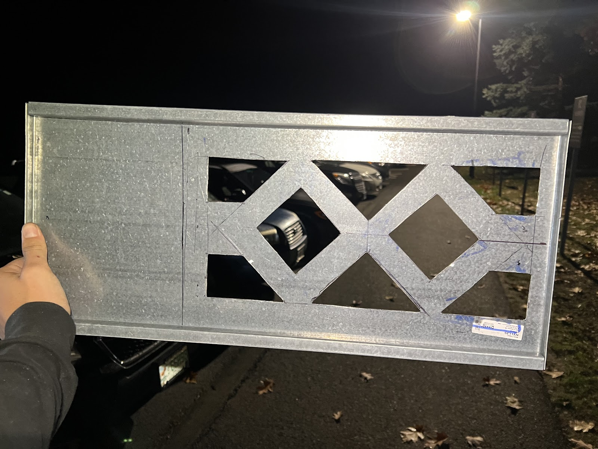
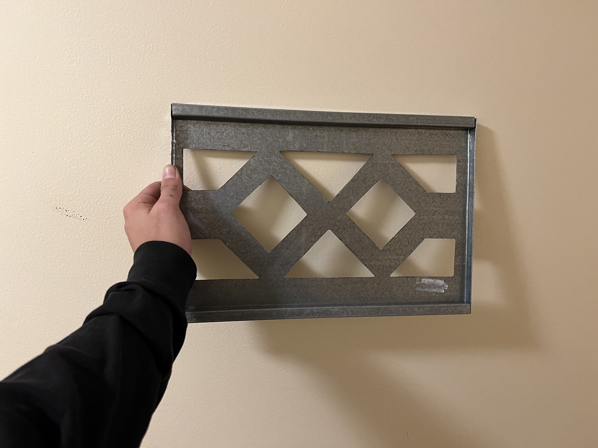
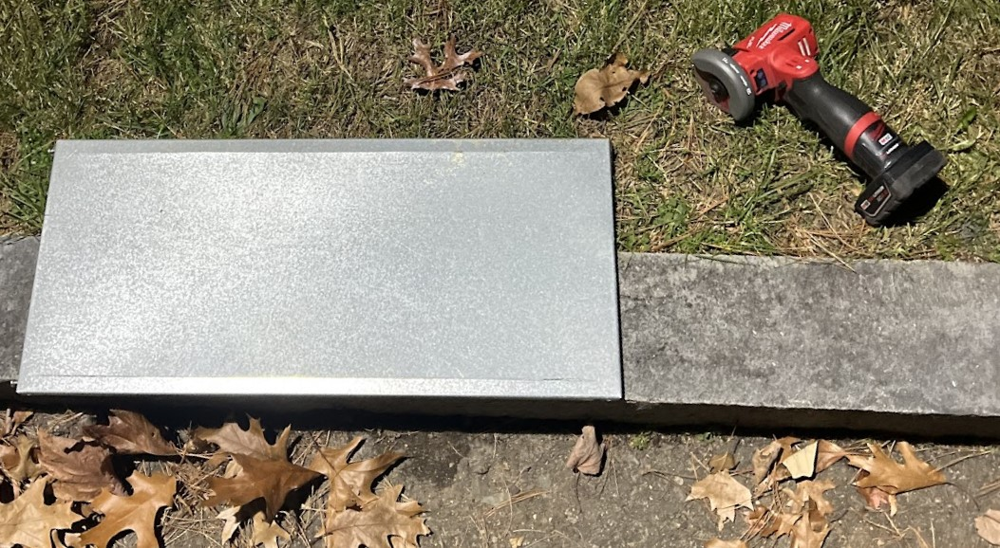
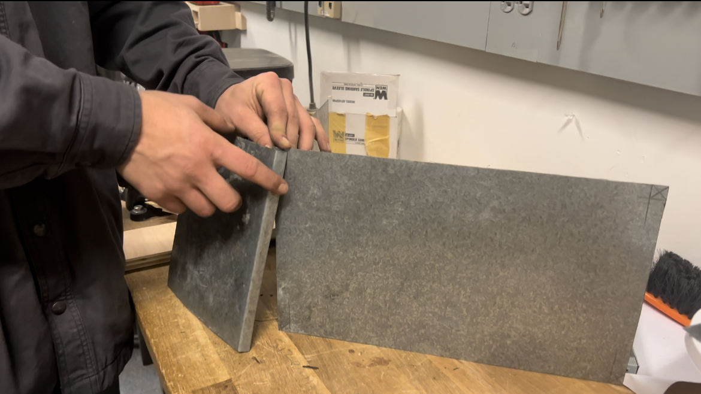
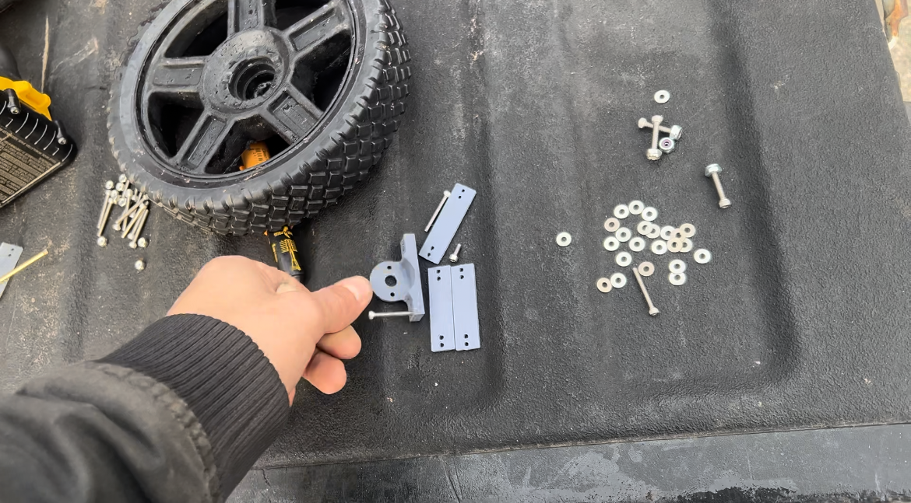
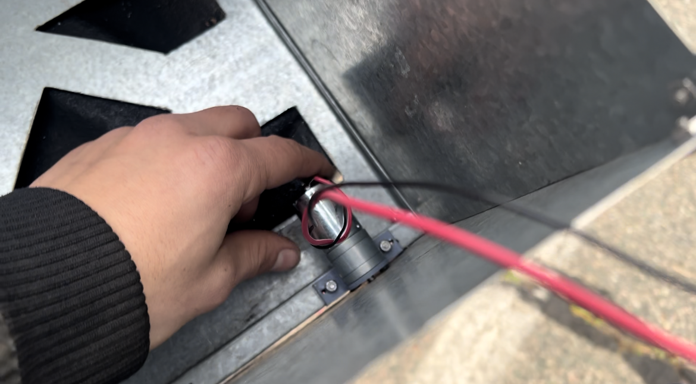
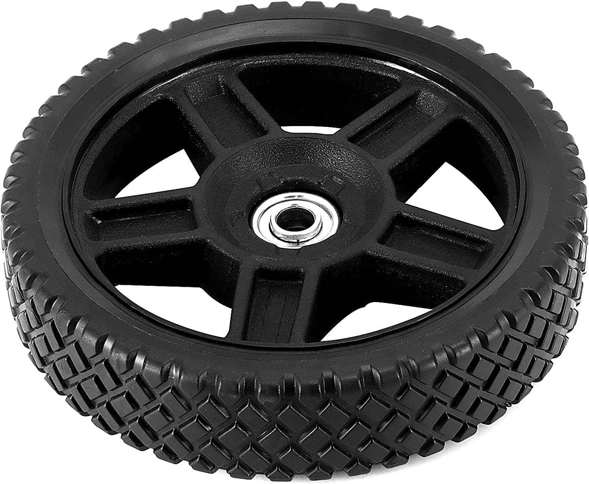
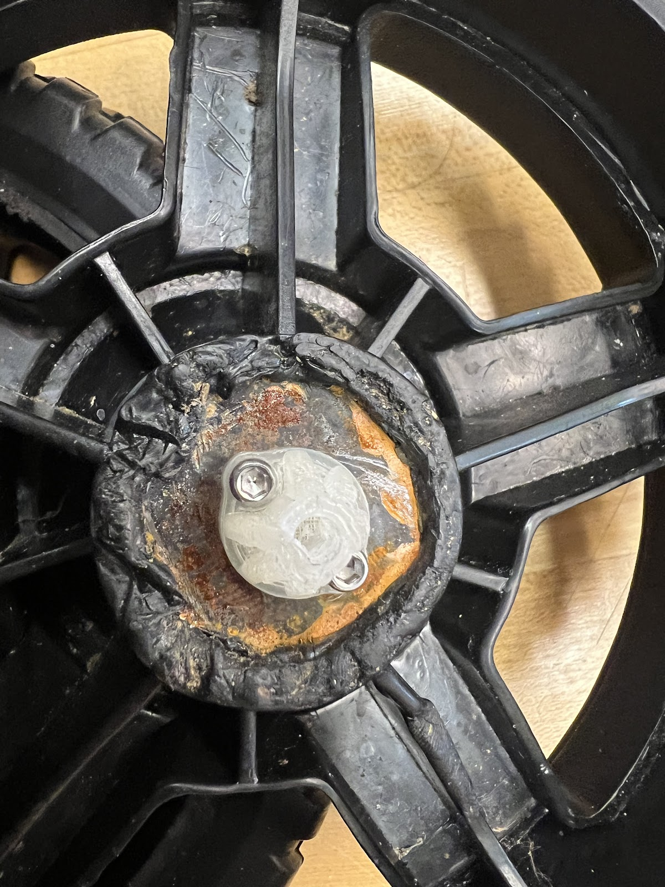

Mechanical
Sustainability

A major goal for our project was to be as sustainable as possible. This meant using scrap materials in the classroom from previous projects to build most things in the rover. The body itself was made by several trays of metal we found in one of the scrap bins. They were not our ideal sizes, but we still decided to make use of old scrap. Additionally, pieces used in the wheels were also picked up from scrap bins. We are proud to say that most of our rover is reused material.
Chasis
We wanted to design a chassis with a sleek design. We wanted minimal protrusions as well as smooth sides. That said, we used scrap to fabricate it so it was not as easy as we thought. We began with the bottom of our rover. It was decided that the trays we chose were slightly too long, so the piece had to be cut to size. Next, we cut holes in the middle of the tray to cut down on weight.
 We then moved onto walls. Because of all the rails and bends that the scrap metal had, we had to ideate for days to figure out how to cut these down to size and keep the sides smooth. We finally decided on a design which required us to shorten and narrow down the scrap trays as shown below.
 To continue with our minimalist design, we decided we wanted the motors to be inside the rover. After we 3D printed a motor mount, we marked the chassis for drilling. We were able to install the motors with only the motor axles sticking out of small holes.
 With this done, we simply added a lightweight layer on top as a cover which doubled as a place to mount the camera. The camera itself was connected to a motor that helped it pan left and right. It also had a protective casing that also kept it sturdy while the rover would move.
Wheels
With the chassis done, all we had left was the wheels. We looked for wheels in the scrap bins, but no wheels were big enough for our rover. We had to order some wheels using our budget.
These wheels, however, had a few issues. The main issue was that they came with bearings. The secondary issue was the weight of them. Thankfully, we were able to come up with solutions. The bearings issue was solved by taking the bearings out. This left a big hole in the middle of the wheel, so we took scrap metal and melted it into the hole. This allowed us to have a foundation for a 3d printed piece that connected the wheel to the motor axles with a bolt.
The weight issue was bypassed by shaving off what we could from the wheels themselves. Since the inside of the wheel would be out of sight, we focused on chipping away at that.